To the moon
Jimizz
Le jeton de Jacquie & Michel, et les quatre surfaces qu’il a fallu dessiner autour pour en faire un produit : un site vitrine, un dashboard d’investissement, une marketplace de NFT et un site de quiz. Une identité neuve à tenir d’un écran à l’autre, sur un sujet où presque tout restait à inventer.
Skills
- UI/UX
- Intégration
- Graphisme
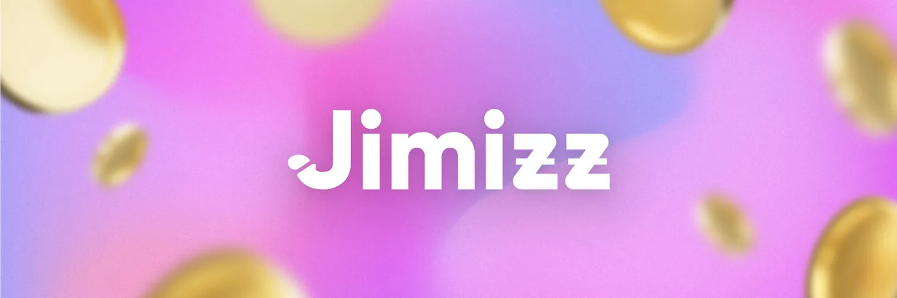

Le projet Crypto de Jacquie & Michel
Jimizz est la crypto-monnaie pensée par Jacquie et Michel, le leader du X en France, pour révolutionner le secteur du X grâce à des fonctionnalités inédites qui profiteront aux consommateurs, aux créateurs et aux investisseurs.
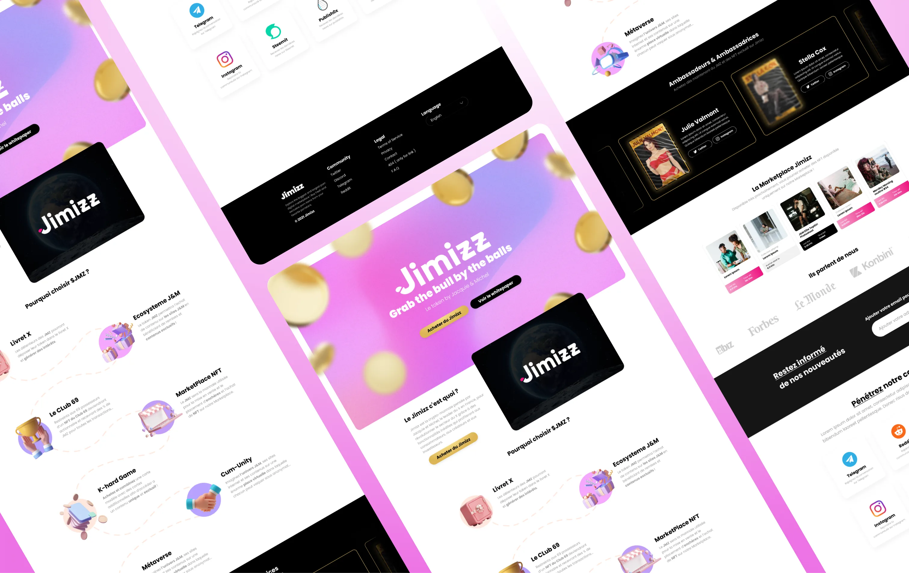
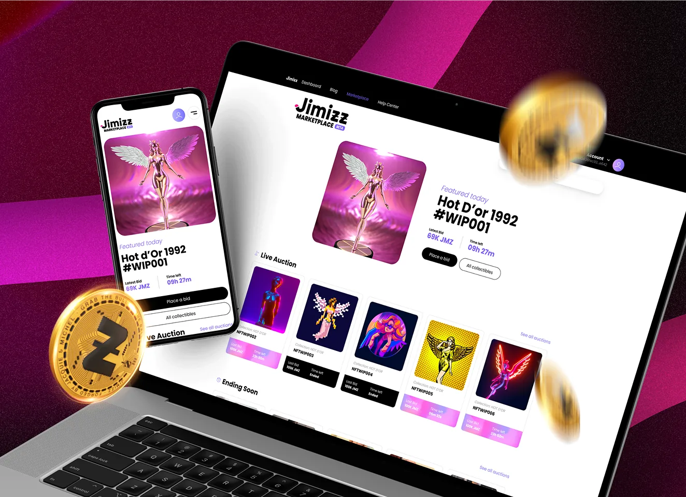
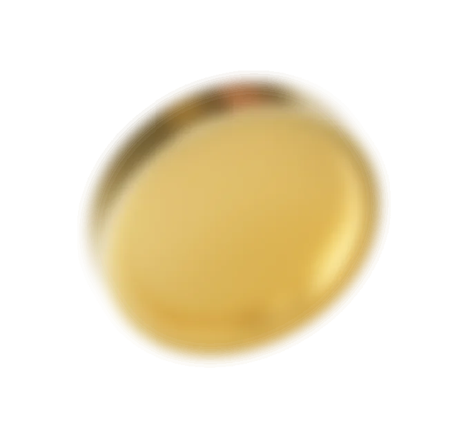
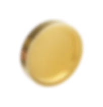
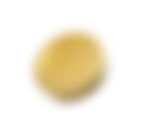
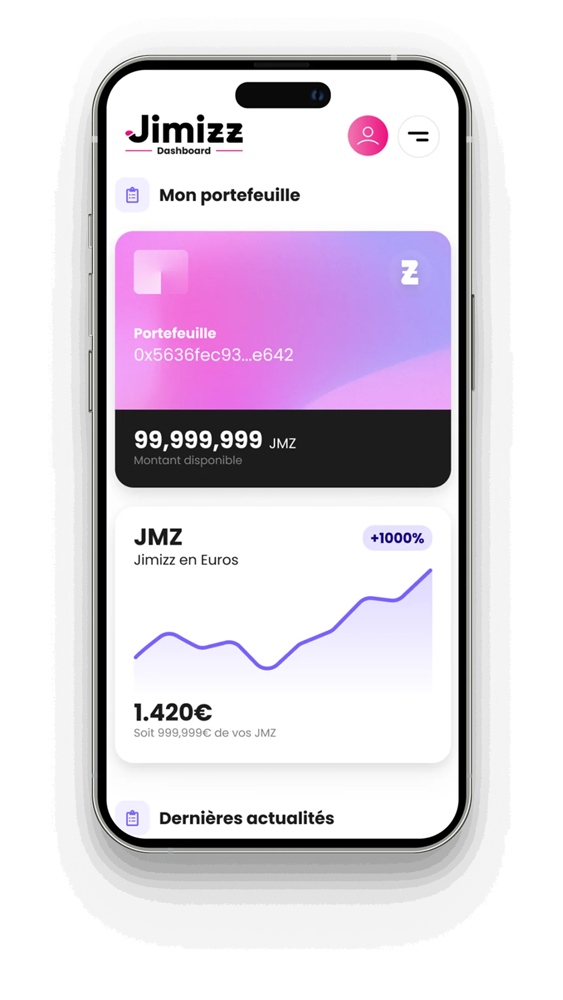
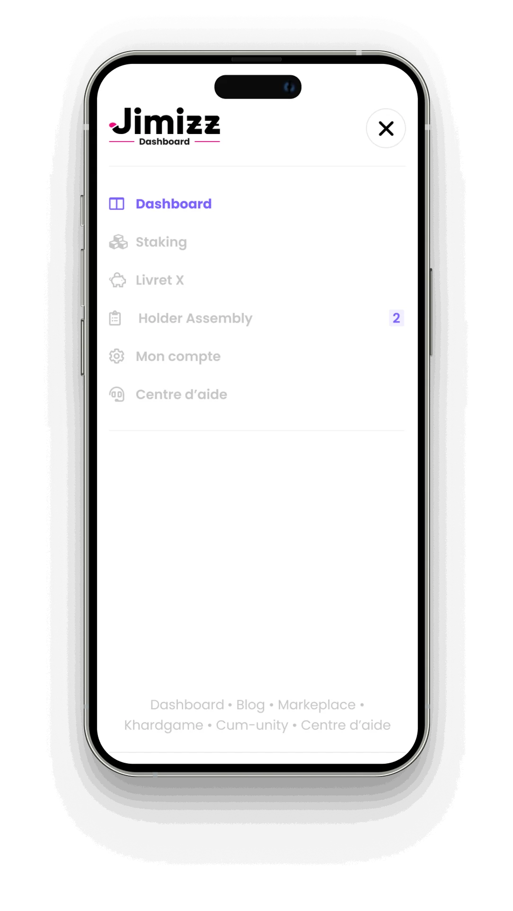
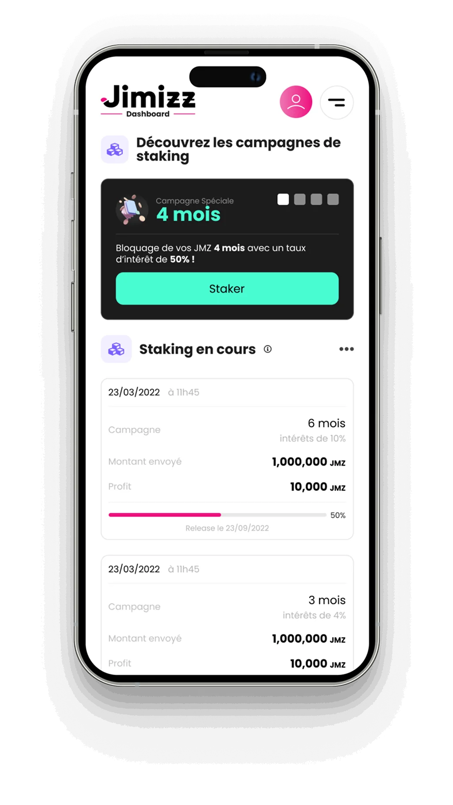
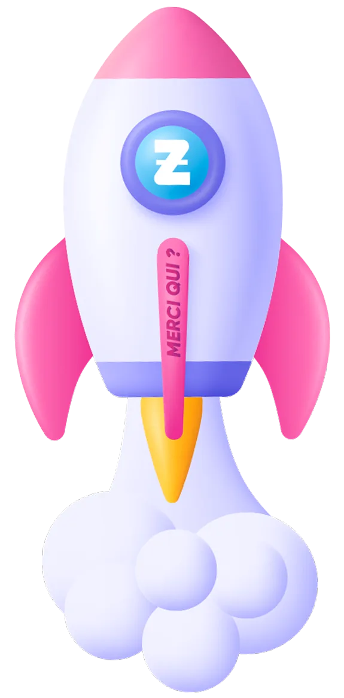
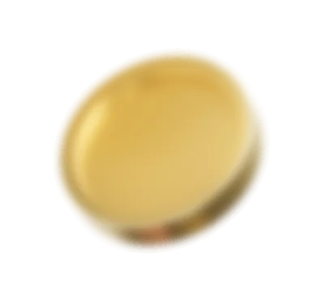
Un univers 3.0 complet
En plus de proposer une monnaie, le projet Jimizz a développé plusieurs plateformes pour construire un écosystème complet. Un dashboard pour la gestion de son investissement, une marketplace pour acheter des NFT exclusifs et même un site de quizz pour animer sa communauté !
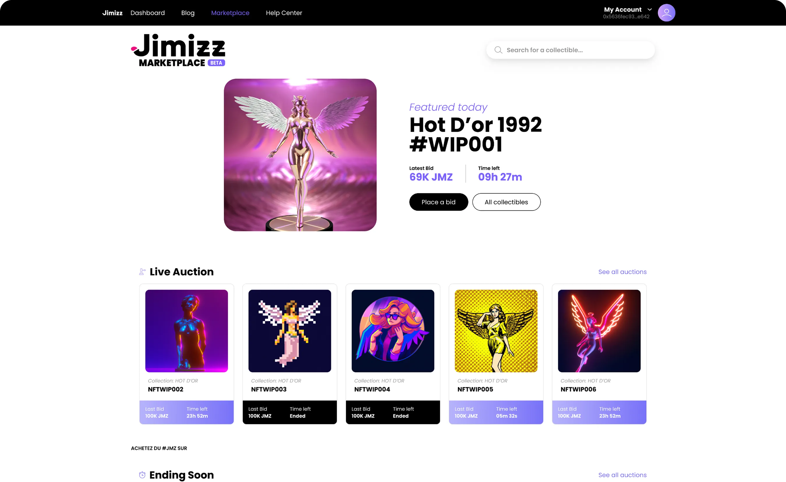
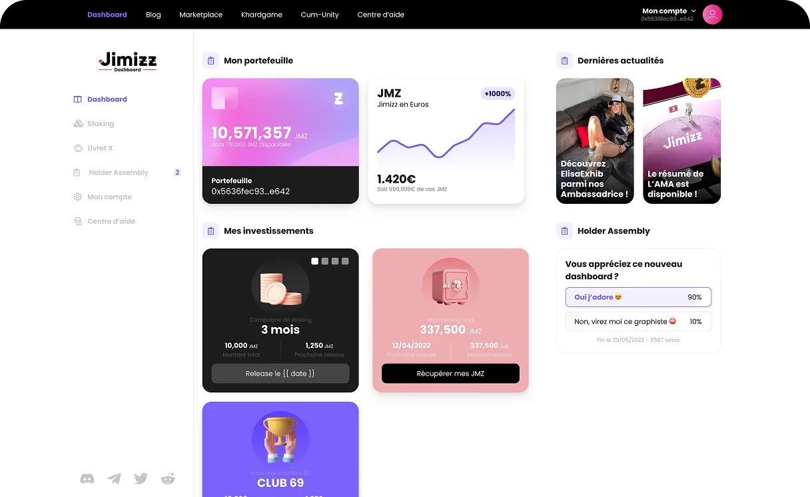
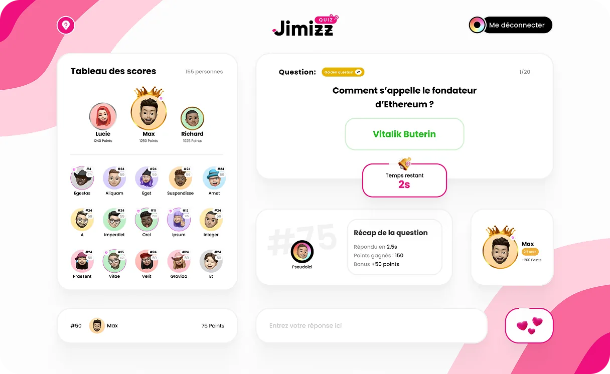
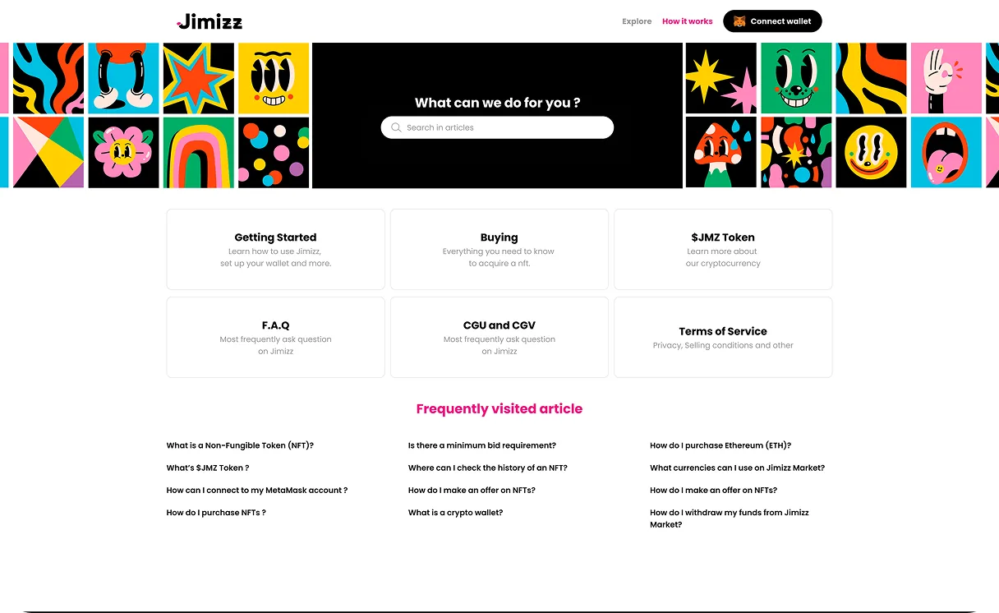